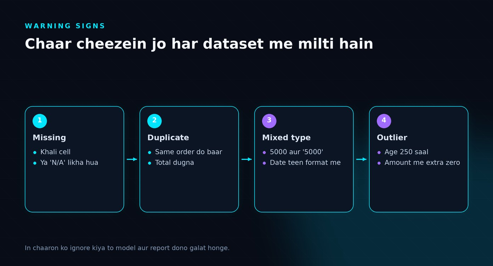
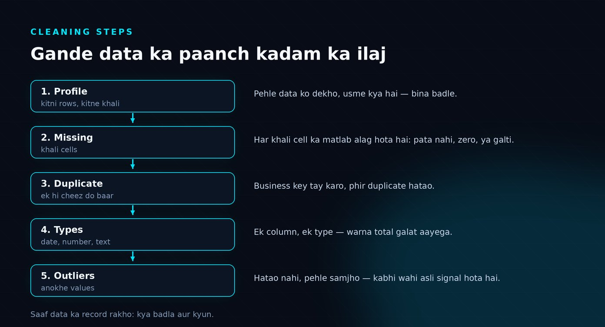

Data Cleaning Kya Hai? Ganda Data Saaf Karne ka 7-Step Process
जब कोई नया dataset मिलता है, तो पहला उत्साह यह होता है कि चलो model बनाएँ या chart बनाएँ। और असली काम का पहला हफ़्ता यह पता लगाने में निकल जाता है कि क्यों 40% cells खाली हैं, क्यों एक ही order दो बार है, और क्यों "12/11/2026" का मतलब दो जगह अलग निकल रहा है।
Data cleaning वही काम है — data को समझकर उसे इस्तेमाल लायक बनाना। यह सबसे कम चमकदार हिस्सा है और सबसे ज़्यादा समय लेता है, पर यही तय करता है कि आपका analysis सही होगा या नहीं। इस guide में सात कदम, चार चेतावनी संकेत, missing values के चार तरीके, duplicates पकड़ने का तरीका, outliers, validation rules और Python का छोटा उदाहरण है।
छोटा जवाब: Data cleaning का क्रम है — पहले data को बिना बदले देखो (profile), फिर missing values का मतलब समझो, फिर duplicates, फिर column के types और dates, फिर outliers, फिर validation rules, और अंत में हर बदलाव का record. सबसे ज़रूरी नियम: हटाने से पहले समझो। जो value अजीब लगे, वह अक्सर असली जानकारी होती है।
Data cleaning kya hai — aur 70% time kyun
Data cleaning का मतलब सिर्फ़ खाली cells भरना नहीं है। इसमें चार तरह के काम आते हैं: गलत entries ठीक करना (जैसे age 250), एक जैसी चीज़ों के अलग नाम जोड़ना ("Delhi", "delhi", "New Delhi"), duplicates हटाना, और columns को सही type में लाना।
यह काम 70% समय क्यों लेता है? क्योंकि असली data किसी form से आता है, जहाँ हर इंसान अपने तरीके से भरता है। कोई phone number में +91 लिखता है, कोई नहीं; कोई date DD-MM में डालता है, कोई MM-DD में। जब तक यह साफ़ न हो, हर calculation में शक रहेगा।

Gande data ke chaar sanket
Missing: खाली cell, या "N/A", "-", "unknown" जैसा text. सबसे खतरनाक वह है जो खाली नहीं दिखता — जैसे 0 जहाँ असल में "पता नहीं" था।
Duplicate: एक ही order, customer या payment दो बार। जब तक business key तय न हो, duplicate पकड़ना मुश्किल है।
Mixed type: एक ही column में 5000 और "5000", या तीन अलग date formats. इससे sorting और total दोनों गलत होते हैं।
Outlier: ऐसी value जो बाकी data से बहुत दूर है — age 250, amount में extra zero. कभी यह गलती होती है, कभी असली जानकारी।
सात कदम का process

1. Profile करें। Rows की गिनती, हर column का type, कितने खाली, कितने अलग values, और minimum-maximum. यह एक page का summary है और यह बताता है कि आगे कहाँ देखना है।
2. Missing values संभालें। हर खाली cell का एक कारण होता है — कभी लोग नहीं भरते, कभी system नहीं भेजता। कारण जाने बिना भरना खतरनाक है।
3. Duplicates हटाएँ। पहले business key तय करें — कौन सा combination एक row को अलग बनाता है। फिर उसी पर duplicate ढूँढें, सिर्फ़ पूरी row मिलाकर नहीं।
4. Types ठीक करें। Number को number, date को date, और text को text. Dates में एक ही format तय करें और सबको उसी में लाएँ।
5. Outliers देखें। हर outlier को हटाना गलती है। पहले देखें कि वह असली है या गलती — और फिर तय करें कि रखना है, सुधारना है या अलग करना है।
6. Validation rules जोड़ें। जहाँ data आता है, वहीं शर्त लगाएँ — email में @ हो, date आज से आगे न हो, amount ऋणात्मक न हो। यह आगे आने वाली सफ़ाई का बड़ा हिस्सा रोक देता है।
7. Record रखें। कौन सा column बदला, किस नियम से, और कितनी rows पर असर पड़ा — यह लिखें। छह महीने बाद यही document बचाएगा।
Missing values: chaar tarike
1. Row हटाना। तब ठीक है जब बहुत कम rows में value missing हो और वे rows बाकी मायने में भी खाली हों। हर खाली cell वाली row हटाना सबसे आम गलती है — 10% data चुपचाप गायब हो जाता है।
2. Mean या median से भरना। Number वाले column में average या median डाल देना। सरल है, पर इससे data की variation कम हो जाती है — यानी आप झूठा भरोसा पैदा करते हैं कि सब values मिल गईं।
3. Flag बनाकर भरना। एक नया column जोड़ें — amount_missing = True — और value की जगह कोई sensible default डालें। इससे model को पता रहता है कि यह value अनुमान है।
4. Model से अनुमान। बाकी columns से value का अनुमान लगाना। जटिल है और सिर्फ़ तब ठीक है जब missing data बहुत हो और उसका असर बड़ा हो।
किसी भी तरीके में एक सवाल पहले पूछें: क्या यह value असल में missing है, या उसका मतलब शून्य है? "बोनस" column में खाली का मतलब अक्सर 0 होता है, पर "blood group" में खाली का मतलब पता नहीं।
Duplicates kaise pakdein
पूरी row को copy मानकर duplicate ढूँढना कभी-कभी काम करता है, पर अक्सर नहीं — क्योंकि टाइमस्टैम्प हर बार अलग होता है। बेहतर तरीका है business key पर गिनना: order_id, या customer_id + date + amount.
दूसरा तरीका है fuzzy matching — जब नाम थोड़ा अलग लिखे गए हों ("Rahul Sharma" और "Rahul Sharmaa"). यह ज़रूरी है पर सावधानी माँगता है, क्योंकि दो अलग इंसानों के नाम भी मिल सकते हैं। जब शक हो, तो duplicate हटाने से पहले इंसान से पूछें।
Type aur date ki problems
Date के साथ सबसे आम समस्या यह है कि 01/02/2026 का मतलब 1 फरवरी है या 2 जनवरी — यह पता नहीं चलता। इसका इलाज है: source से पूछें, या जहाँ दिन 12 से ज़्यादा हो वहाँ से format पकड़ें। सबसे सुरक्षित तरीका है पूरे column को एक format (जैसे ISO 2026-02-01) में बदलकर store करना।
Number के साथ भी वही दिक्कत है — "₹1,299" text है, 1299 number है। Comma, currency symbol और spaces हटाकर उसे number बनाएँ, वरना total में वह column शामिल ही नहीं होगा और error भी नहीं आएगा।
Text cleaning ke paanch niyam
1. Spaces साफ़ करें। TRIM से आगे-पीछे की spaces हटाएँ — lookup fail होने की सबसे आम वजह यही है।
2. Case एक जैसा करें। तुलना से पहले lower करें, पर दिखाने के लिए मूल case रखें।
3. Spelling के variants जोड़ें। "Bangalore", "Bengaluru" और "BLR" एक ही शहर हैं — एक mapping table बनाकर सबको एक नाम पर लाएँ।
4. Extra punctuation और emoji हटाएँ। मुख्य column से, वरना grouping में हर variant अलग group बनेगा।
5. मूल column न मिटाएँ। साफ़ किया हुआ नया column बनाएँ, ताकि बाद में मिलान कर सकें।
Outliers: hatao nahi, samjho
Outlier पकड़ने के तीन तरीके हैं। पहला — business rule: age 0–110 के बीच होनी चाहिए, amount ऋणात्मक नहीं। दूसरा — IQR method: Q1 और Q3 निकालकर उनसे बाहर की values देखें। तीसरा — z-score: average से कितने standard deviation दूर है।
पर सबसे ज़रूरी सवाल यह है — क्या यह value गलत है या दुर्लभ? E-commerce में एक बहुत बड़ा order outlier लग सकता है, पर वह असली हो सकता है। Fraud detection में outlier ही असली signal होता है। इसलिए हटाने से पहले देखें, और अगर हटाएँ तो record रखें।
Validation: aage ki safai bachao
सबसे अच्छा data cleaning वह है जो बाद में करनी ही न पड़े। जहाँ data दर्ज होता है, वहाँ शर्तें लगाएँ — form में date picker, dropdown, और number field. जहाँ data किसी API से आता है, वहाँ schema check करें और गलत record को साफ़ error के साथ रोकें।
एक छोटा validation set बनाएँ जो हर load पर चले: कितनी rows आईं, कितनी खाली, कितनी duplicate, और कितनी शर्त से बाहर। जब ये numbers अचानक बदलें, तो कुछ गड़बड़ है — और आपको report गलत होने से पहले पता चल जाएगा।
Har load par chalne wale chhah checks
एक छोटी script बनाएँ जो हर नए batch पर ये छह numbers निकाले और किसी जगह लिख दे: rows की गिनती, खाली cells का प्रतिशत, duplicate की गिनती, date range, negative amounts की गिनती, और उन rows की गिनती जो business rule से बाहर हैं। जब कोई number अचानक बदले — जैसे खाली cells 2% से 15% हो जाएँ — तो पहले data source जाँचें, report नहीं।
यही छोटा check किसी बड़े tool से ज़्यादा काम करता है, क्योंकि यह हर बार चलता है और चुपचाप नहीं रहता।
Python me chhota udaharan
pandas में यह काम कुछ lines में हो जाता है:
import pandas as pd
df = pd.read_csv("orders.csv")
# 1. profile
print(df.shape)
print(df.isna().sum())
print(df["amount"].describe())
# 2. types aur dates
df["created_at"] = pd.to_datetime(df["created_at"], errors="coerce")
df["amount"] = pd.to_numeric(df["amount"].astype(str).str.replace("[₹,]", "", regex=True), errors="coerce")
# 3. duplicates
df = df.drop_duplicates(subset=["order_id"], keep="first")
# 4. missing ka flag
df["amount_missing"] = df["amount"].isna()
df["amount"] = df["amount"].fillna(df["amount"].median())
print(df.isna().sum())यहाँ तीन बातें देखें। errors="coerce" गलत value को error देने के बजाय खाली कर देता है, जिससे आप बाद में उन्हें देख सकते हैं। drop_duplicates में subset ज़रूरी है, वरना वह पूरी row पर काम करेगा। और missing का flag बनाना एक line का काम है जो बाद में model को बहुत मदद देता है।
paanch galtiyan
1. मूल file बदल देना। कच्चे data को हमेशा अलग रखें। सफ़ाई हमेशा एक नई copy पर करें, वरना बाद में "पहले क्या था" पता नहीं चलेगा।
2. खाली cells को 0 मान लेना। इससे average गलत आता है और ग्राहक की असली हालत छिप जाती है।
3. हर outlier हटाना। कभी-कभी outlier ही सबसे ज़रूरी जानकारी होती है।
4. बदलाव का record न रखना। जब किसी report में number बदल जाए, तो बताना पड़ता है कि क्यों बदला। बिना record यह जवाब नहीं मिलता।
5. सफ़ाई को एक बार का काम समझना। नया data हर हफ़्ते आता है। इसलिए सफ़ाई की script बनाएँ, हाथ से sheet ठीक न करें।
Data साफ़ हो जाने के बाद अगला कदम analysis होता है — data science roadmap में पूरा क्रम है, और dashboard बनाना है तो BI tools की तुलना पढ़ें।
Mera anubhav
मेरे एक project में 18% orders गायब दिख रहे थे। मैंने दो दिन data में खोजा और अंत में पता चला कि status column में "complete" और "Complete" और "COMPLETE" तीनों थे — filter सिर्फ़ एक को पकड़ रहा था। सफ़ाई की एक line ने पूरा number बदल दिया।
दूसरी बात जो मैंने सीखी: हर खाली cell का कारण पूछना। एक column में 40% cells खाली थीं — बाद में पता चला कि वह column एक नई feature का था जो सिर्फ़ पिछले तीन महीने से भर रहा था। अगर मैं उसे median से भर देता, तो पूरी history में एक झूठी जानकारी डाल देता।
तीसरी बात: सफ़ाई की script को Git में रखें। जब कोई पूछे "यह number कैसे बना", तो script ही सबसे अच्छा जवाब है। और जब नियम बदलें, तो पुराना number भी दोबारा बनाया जा सकता है।
नतीजा
Data cleaning का काम हटाना नहीं, समझना है। पहले profile करें, फिर missing का कारण, फिर duplicate, type, outlier — और हर बदलाव लिखकर रखें। सफ़ाई को script में लिखें, ताकि हर नए data पर वही नियम अपने आप लगें। जो लोग इस कदम को जल्दी निपटा देते हैं, उन्हें बाद में हर report पर शक करना पड़ता है।
अक्सर पूछे जाने वाले सवाल
Data cleaning में कितना समय लगता है?
असली project में कुल समय का 60–80%. पहली बार ज़्यादा लगता है; जब script बन जाए, हर नए batch पर कम।
क्या Excel में सफ़ाई कर सकते हैं?
छोटे data के लिए हाँ — TRIM, Remove Duplicates, Text to Columns और filters से बहुत काम हो जाता है। बड़े या बार-बार आने वाले data के लिए script बेहतर है।
क्या missing values भरना ज़रूरी है?
हमेशा नहीं। कुछ models खाली values संभाल लेते हैं। पर तब भी यह जानना ज़रूरी है कि कितनी और कहाँ खाली हैं।
क्या duplicates हटाने से data खराब होता है?
तभी जब वे असल में अलग records हों। इसीलिए business key तय करना ज़रूरी है — बिना उसके हटाना खतरनाक है।
क्या cleaning का record रखना ज़रूरी है?
बहुत। जब number बदले, तो कारण बताना पड़ता है। एक छोटा log — क्या बदला, किस नियम से, कितनी rows — काफ़ी है।